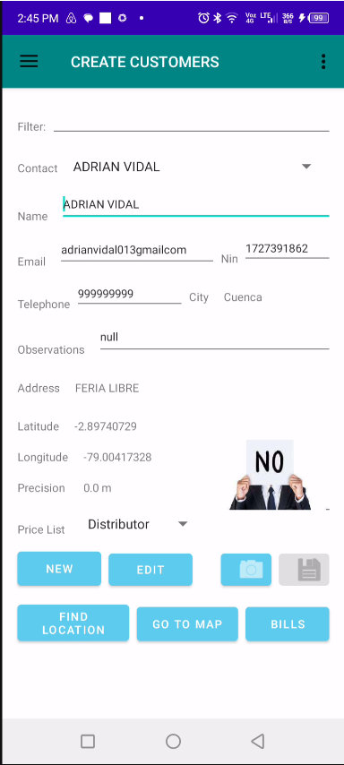
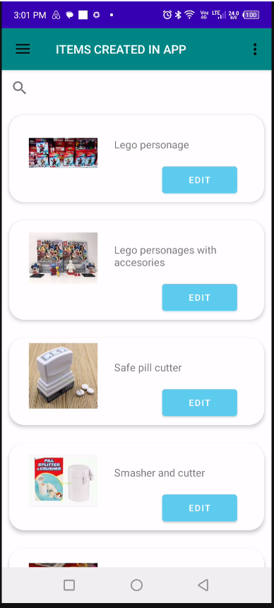

Projetado para Mobilidade e Operações de Campo
O aplicativo móvel leva as principais funcionalidades empresariais diretamente para dispositivos Android. Os usuários podem criar clientes, gerenciar fornecedores, registrar vendas e compras, monitorar atividades empresariais, visualizar informações geográficas e sincronizar dados com a plataforma central.
Seja trabalhando no escritório, visitando clientes, gerenciando operações de campo ou apoiando equipes remotas, o aplicativo móvel mantém as informações empresariais acessíveis e atualizadas.
Login Seguro de Usuários
Tela de autenticação que fornece acesso seguro às informações da empresa, permissões de usuários e dados empresariais sincronizados.

Painel Principal do Aplicativo Móvel
Tela central de navegação que oferece acesso rápido a clientes, fornecedores, estoque, compras, vendas, mapas, sincronização e análises.

Cadastro de Clientes e Fornecedores
Crie registros de clientes e fornecedores diretamente pelo dispositivo móvel, permitindo que equipes de campo registrem novos parceiros comerciais imediatamente.

Diretório de Clientes e Fornecedores
Consulte e gerencie clientes e fornecedores existentes, revise informações e acesse registros comerciais de qualquer lugar.

Cadastro de Produtos
Registre novos produtos e itens de estoque diretamente em campo, eliminando atrasos e aumentando a eficiência operacional.

Catálogo de Itens de Estoque
Visualize produtos disponíveis, informações de estoque e detalhes dos itens por meio de uma interface móvel intuitiva.

Registro de Vendas
Registre vendas para clientes em tempo real, permitindo que representantes comerciais capturem transações imediatamente durante visitas aos clientes.

Histórico de Vendas
Revise transações de vendas concluídas, monitore o desempenho e acompanhe atividades comerciais em dispositivos móveis.

Registro de Compras
Crie transações de compra e pedidos a fornecedores diretamente em campo, garantindo que as operações da empresa continuem sem atrasos.

Histórico de Compras
Acesse informações históricas de compras, analise atividades de fornecedores e acompanhe operações de aquisição.

Sincronização de Dados
Sincronize clientes, fornecedores, produtos, vendas, compras e dados operacionais com a plataforma desktop.

Gráficos e Análises Empresariais
Gere relatórios visuais, indicadores de desempenho e estatísticas empresariais diretamente pelo aplicativo móvel.

Mapas Geográficos Interativos
Visualize clientes, fornecedores e representantes comerciais em mapas interativos, auxiliando no planejamento de rotas, gestão de territórios e operações de campo.